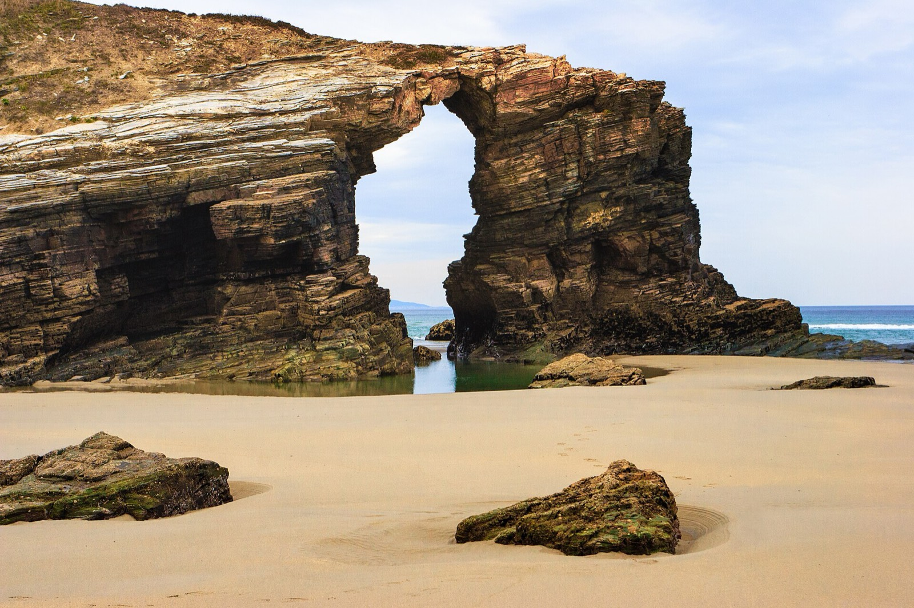
Лиссабон → Сантьяго-де-Компостела → Коста-да-Морте → А-Корунья → Прайя-де-лас-Катедралес → Кудильеро → Овьедо → Леон → домой.
Природа · арт · старина.
Выезд в 18:00–19:00, ужин по дороге. На границе часы переводятся на час вперёд.
Платники: A3 в Португалии, AP-9 в Галисии. Граница — мост через Миньо у Валенсы, дальше час двадцать до Сантьяго. Отель предупредить о позднем заезде, иначе в час ночи можно целоваться с закрытой дверью.
Крепость Валенса-ду-Минью — прямо у съезда с трассы, открыта круглосуточно, вход свободный, ночью подсвечена. Двойная звезда по системе Вобана, перестроена в 1661–1713 после восстановления независимости Португалии, периметр стен ~5 км — одна из крупнейших бастионных крепостей Европы. 20 минут по стенам — и дальше. Через реку — огни Туя: собор-крепость освящён в 1225-м, его портал считается первой готической скульптурой Иберии. Рассмотрим с испанского берега в другой раз — а Международный мост 1886 года проедем прямо по нижнему ярусу (легенда приписывает его Эйфелю, на деле — инженер Пелайо Мансебо).
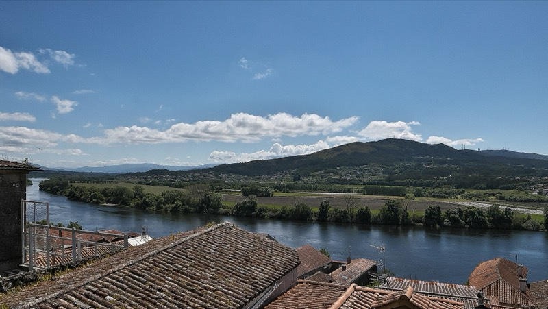
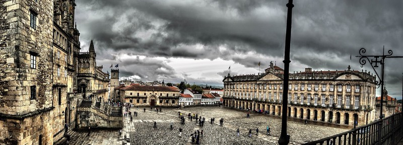
Город начался около 820 года: отшельник увидел свечение над римским некрополем, епископ объявил гробницу могилой апостола Иакова — и сюда пошла вся Европа.
Нынешний романский собор заложен в 1075-м, освящён в 1211-м. Портик Славы — вершина романской скульптуры: мастер Матео, 1168–1188, около 200 фигур — Христос во славе, 24 старца Апокалипсиса с музыкальными инструментами, улыбающийся пророк Даниил. Десятилетняя реставрация (2008–2018) раскрыла остатки красок XII века — теперь портик показывают только по сеансам, 25 минут, без фото.
Барочный фасад Обрадойро (1738–1749) пристроили именно чтобы укрыть портик от атлантической непогоды. Знаменитый ботафумейро — кадило на 62 кг, которое восемь служителей раскачивают до 68 км/ч, — летает лишь по большим праздникам или по заказу (~500 €); попасть «случайно» почти нереально.
Меркадо-де-Абастос — второе по посещаемости место города после собора: рынок здесь с 1870-х, гранитные нефы — 1941 год.
Осьминог, перцы падрон (каждый десятый жжётся — лотерея), сыр тетилья, устрицы; в пятом нефе — бары, где за ~5 € приготовят купленное тобой. Идти до 13:00, пока рынок живой. Ужин — Rúa do Franco и Rúa da Raíña: пульпо-а-фейра, тарта-де-Сантьяго, альбариньо.
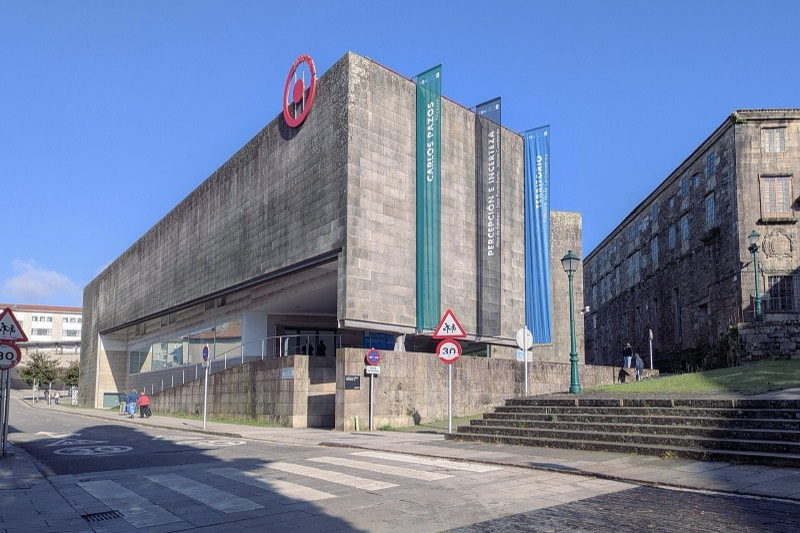
Арт-блок дня: гранитный модернизм Сизы дверь в дверь с монастырём XIII века — и парк на месте старого кладбища между ними.
CGAC — Галисийский центр современного искусства (1993): Алвару Сиза одел модернистский объём в тот же гранит, что и старый город; внутри — знаменитая игра света в атриуме, на крыше — терраса с видом на Бонаваль. Museo do Pobo Galego в монастыре Сан-Домингос-де-Бонаваль — галисийская народная культура: лодки, ремёсла, волынки-гайты, а главное — тройная винтовая лестница Доминго де Андраде (конец XVII в.): три независимые спирали в одной башне, каждая ведёт на свой этаж. В церкви — пантеон знаменитых галисийцев, включая поэтессу Росалию де Кастро.
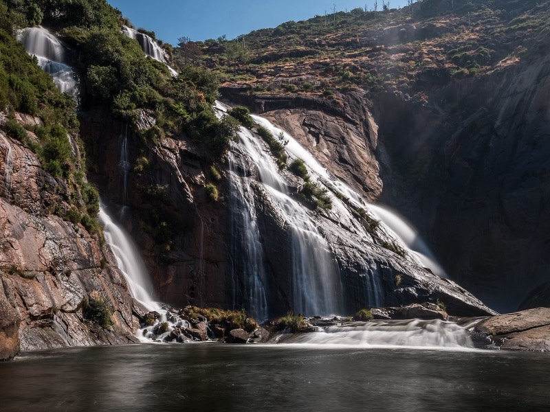
Река Шальяс срывается с ~40-метрового гранитного уступа прямо в бухту Атлантики — считается единственным таким устьем-водопадом в континентальной Европе.
У водопада драматичная биография: в 1986-м плотина ГЭС выключила его полностью — вся вода ушла в трубы. После кампании местных с 2000 года воду вернули по расписанию, а с 2011-го — насовсем. Над бухтой — гора Пиндо (627 м), «кельтский Олимп» из розового гранита, на закате горит красным.
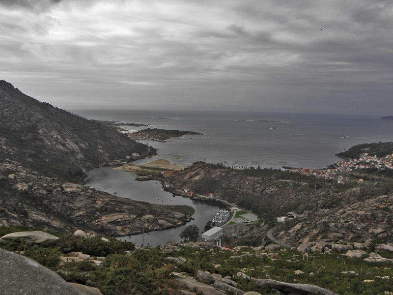
Finis Terrae — «край земли»: дальше на запад римский мир кончался. Здесь же кончается Камино — от Сантьяго сюда идут ещё 89 км, у маяка стоит столбик «K.M. 0,000».
Античные авторы помещали на мысу Ара-Солис — алтарь Солнца; вершина над ним так и зовётся Монте-Фачо, «гора сигнального костра». Маяк — 1853 год, инженер Фелиш Уагон: башня всего 17 м, но огонь стоит на 143 м над водой и виден за 23 мили. С 1888-го в туманы ревёт сирена — «корова Фистерры». Побережье вокруг — тот самый «Берег смерти», названный за сотни кораблекрушений.
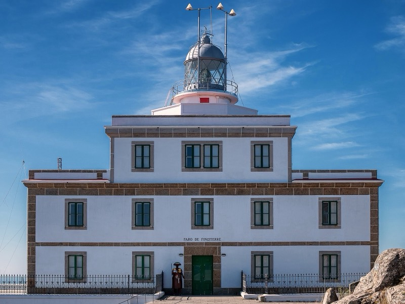
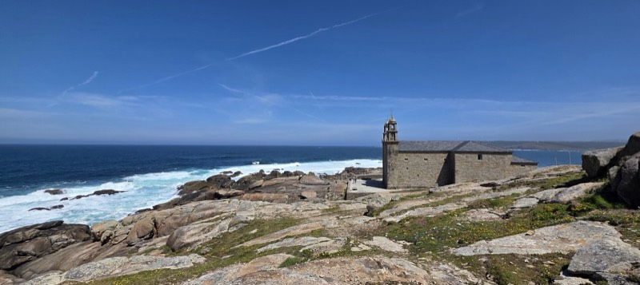
Место, которое почти все собираются пропустить — и почти все, кто доехал, называют лучшим впечатлением побережья. Закат тут хвалят настойчивее, чем на Фистерре.
Святилище Вирхе-да-Барка стоит прямо на голых гранитных плитах у воды: по легенде Богоматерь приплыла сюда на каменной лодке к апостолу Иакову, и обломки этой лодки — валуны вокруг. Главный из них, Педра-де-Абалар, качается от нажатия руки. В декабре 2013 года в церковь ударила молния и выжгла её изнутри; восстановили к 2015-му. В 2002-м у этих берегов разломился танкер «Престиж» — мемориал «A Ferida», рваная гранитная плита на скале, поставлен в память о разливе.
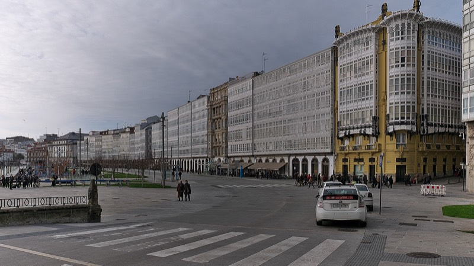
Тыльные фасады домов у гавани в XIX веке зашили белыми остеклёнными галереями по технологии корабельных плотников — от ветра и ради солнечного тепла. «Изнанка» стала парадным морским фасадом.
Главный сюжет старого города — оборона 1589 года: через год после гибели Непобедимой армады сюда пришла английская «контр-армада» Дрейка. Когда англичане пробили стену, горожанка Мария Пита, потеряв мужа в бою, убила знаменосца с кличем «У кого есть честь — за мной!» — штурм захлебнулся. Её площадь — парадный зал города: аркады, ратуша с тремя куполами (1917), бронзовая Мария с копьём.
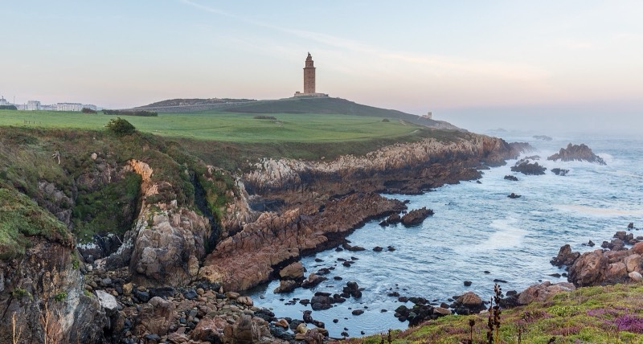
Древнейший действующий маяк мира: римляне зажгли здесь огонь при Траяне, на рубеже I–II веков, — и он горит до сих пор. ЮНЕСКО с 2009 года.
У подножия — закладной камень с посвящением Марсу и подписью архитектора: Гай Севий Луп из Аэминия (нынешняя Коимбра). Римское ядро в 34 м обвивала наружная рампа для подъёма топлива; в 1788–1791 инженер Эустакио Джаннини одел его в неоклассический гранитный футляр и надстроил ярус — вышло 55 м. По легенде, под башней Геркулес зарыл голову великана Гериона — сюжет с герба города; кельтский король Бреоган, по ирландской «Книге захватов», разглядел отсюда Ирландию.
Официально — «пляж Святых вод». Море за тысячи лет прогрызло в вертикальных пластах сланца аркады до 30 м — в отлив они читаются как контрфорсы готического собора.
Природный памятник Галисии с 2005 года; из-за наплыва (в пик — больше 10 000 человек в день) летом пускают по бесплатным именным пропускам.
Окно на песке — 16:30–19:30. Коэффициент низкий (29): вода уйдёт недалеко, главные арки доступны, дальние гроты могут остаться в воде. Прилив здесь быстрый — на растущей воде в гроты не заходить.
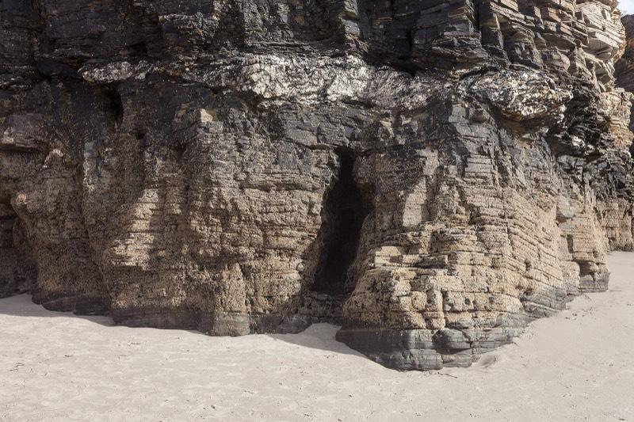
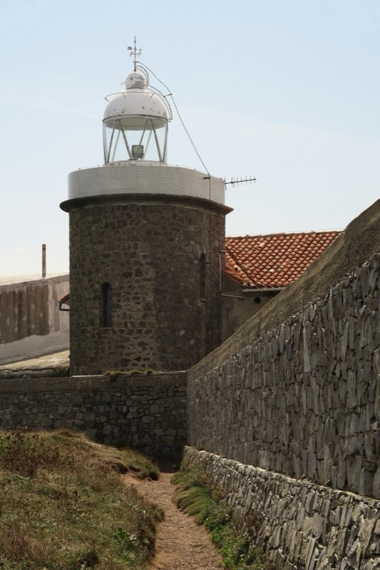
Двенадцать минут крюка перед Кудильеро — и лучший закат дня. Мыс смотрит на запад, а бухта Кудильеро к вечеру уходит в тень.
Обрывы под восемьдесят метров, маяк 1950 года и обзор почти на 180°: в ясную погоду отсюда видно и Кабо-Пеньяс на востоке, и берег Галисии на западе. В километре — Плайя-дель-Силенсио, амфитеатр скал вокруг галечной бухты: спуск крутой, купаться там опасно, а смотреть сверху стоит.
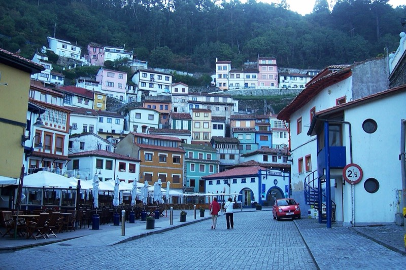
Рыбацкий посёлок-амфитеатр: цветные дома ярусами по стенам ущелья, сходящегося к крошечной гавани. Первое упоминание — купчая 1285 года; легенда упрямо приписывает основание викингам.
Изоляция породила собственный диалект — пишуэто, на котором говорят только здесь. Каждый год 29 июня с лодки в гавани нараспев читают ироничную «проповедь»-хронику года — Л’Амуравелу.
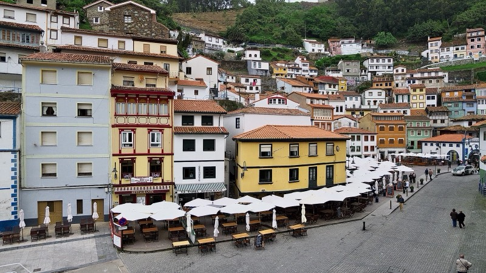
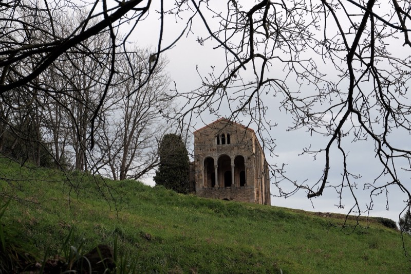
IX век — на двести лет раньше всей европейской романики. Пока вокруг строили из дерева, астурийские короли ставили сводчатые каменные дворцы.
Санта-Мария-дель-Наранко (освящена в 848-м) строилась не как церковь, а как загородный дворец короля Рамиро I: двухэтажный полностью сводчатый зал — редчайший случай для Европы IX века. Витые «верёвочные» колонны, аркады-мирадоры на торцах, тридцать с лишним рельефных медальонов со всадниками и зверями. Сан-Мигель-де-Лильо в ста метрах выше — дворцовая церковь того же короля; уцелела треть здания, зато на косяках входа — цирковые сцены, скопированные с римского консульского диптиха 506 года. Оба — ЮНЕСКО с 1985-го. С балкона-мирадора — Овьедо и Пикос-де-Эуропа.
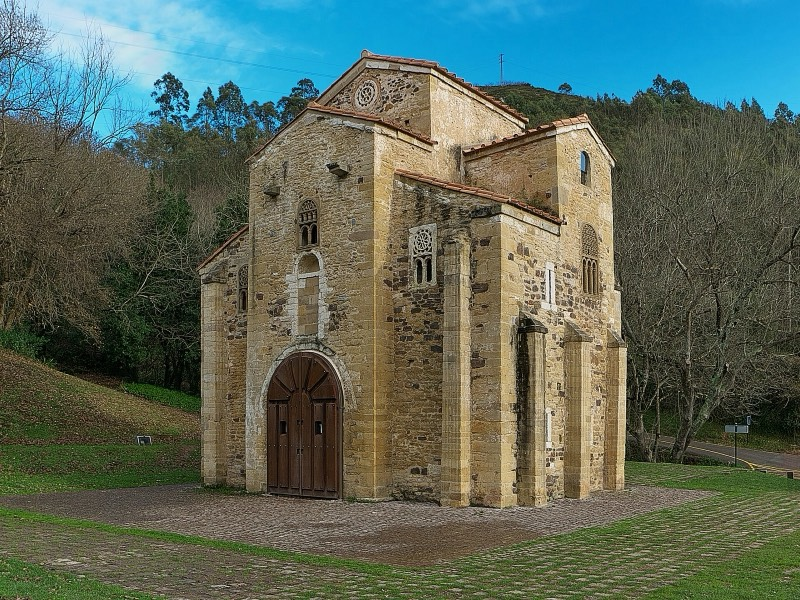
«Кто был в Сантьяго, но не в Сан-Сальвадоре, посетил слугу, но не Господина» — говорили паломники. Отсюда же начинается Camino Primitivo: первым в Сантьяго в 820-х прошёл король Альфонсо II.
Камара-Санта — дворцовая капелла того самого Альфонсо II, начало IX века: Крест Ангелов (808), Крест Победы (908), Ковчег с реликвиями и Сударь Овьедо. В XII веке её украсили апостолатом — шестью парными колоннами-статуями, шедевром романской скульптуры. В 1934-м капеллу взорвали динамитом во время Астурийского восстания — восстановили к 1942-му. Сам собор — поздняя готика XIV–XVI веков с единственной 80-метровой башней, с которой начинается «Регента» Кларина; бронзовая Ана Осорес стоит тут же на площади.
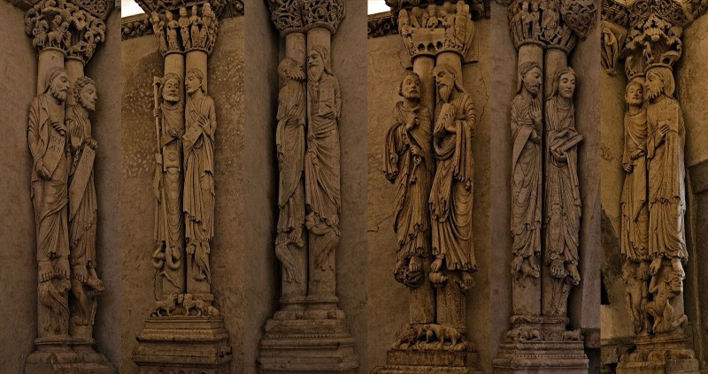
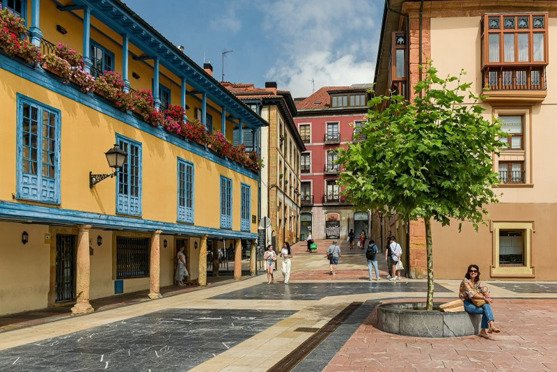
Бесплатный музей с «Апостолатом» Эль Греко, Гойей, Сурбараном, Сорольей, Пикассо, Дали и Миро — сильнейшее провинциальное собрание Испании.
Барочный дворец Веларде (1767) плюс стеклянный корпус Мангадо (2015), встроенный прямо в квартал у собора; всего ~15 000 работ. Старый Овьедо — та самая «Ветуста» из «Регенты»: 30 бронзовых скульптур по улицам, аркадный двор Фонтан, а по дороге вниз — Foncalada, действующий фонтан IX века — единственная уцелевшая гражданская постройка испанского раннего Средневековья (тоже ЮНЕСКО). Если суббота идёт по плану — на музей есть полтора часа до выезда; если нет, приоритет — Эль Греко и испанское барокко во дворце Веларде.
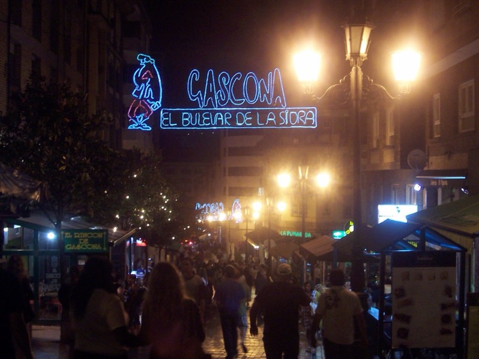
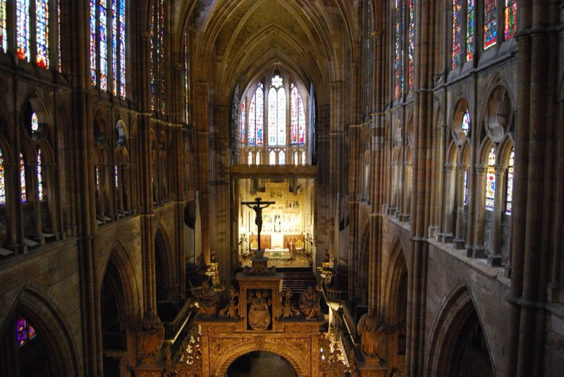
По дороге домой, ~16:20–17:50. Город вырос из лагеря римского легиона Legio VII — отсюда и имя.
Собор — «Pulchra Leonina», самый французский из испанских готических: почти цитата Реймса, начат ок. 1255-го и закончен рекордно быстро, отсюда цельность. Главное — крупнейший в Испании ансамбль средневековых витражей: ~1 764 м², 134 окна и три розы, XIII–XV века. Во второй половине дня солнце бьёт в западную розу — наше время идеально. Сан-Исидоро в 600 метрах — романский ансамбль 1063 года: в Королевском пантеоне — «Сикстинской капелле романики» — 33 захоронения леонской династии под фресками XII века со знаменитым календарём сельских работ по месяцам.
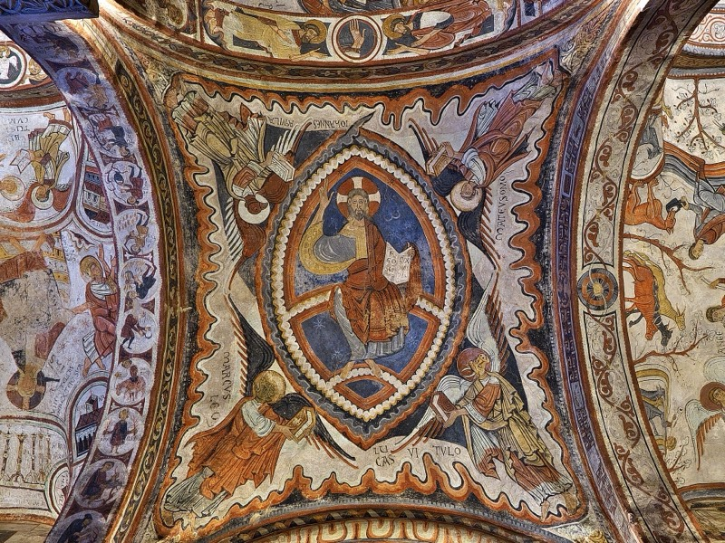
Перегоны длинные, а стоит у них немало. Ограничение — свет: во вторник солнце садится в 20:27, в субботу — в 21:12, и после Саморы Португалия проезжается уже в темноте. Поэтому здесь только то, что работает в своё окно: вечером — соборы и стены с подсветкой, ночью — крепости, куда пускают круглосуточно. Название карточки — ссылка в Maps.
Из списка выпали Гульпиюри (подъезд запретили, штраф около 200 €) и Буфонес-де-Приа: гейзерам нужны полная вода и сильная волна, а в августе штиль — вместо столбов брызг получается луг с дырами.
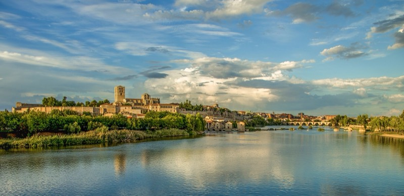
Главный стоп субботы и без крюка — трасса идёт по краю города. Осада 1072 года, романский собор 1174-го с чешуйчатым византийским куполом, мост в 16 арок над Дуэро и замок на обрыве. Романских церквей XII века: 14 в центре, 23 по муниципалитету.
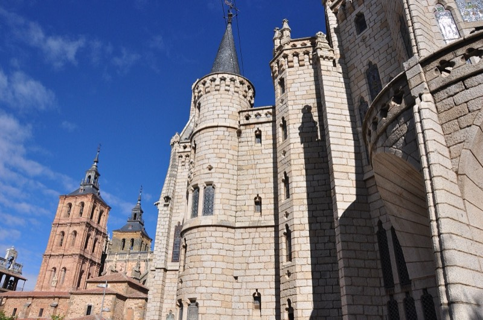
Дворец Гауди (1889–1913) вплотную к готическому собору, а под ногами — римская Asturica Augusta со сводчатой эргастулой I века. Гауди ушёл со стройки в 1893-м, разругавшись с епархией после смерти заказчика.
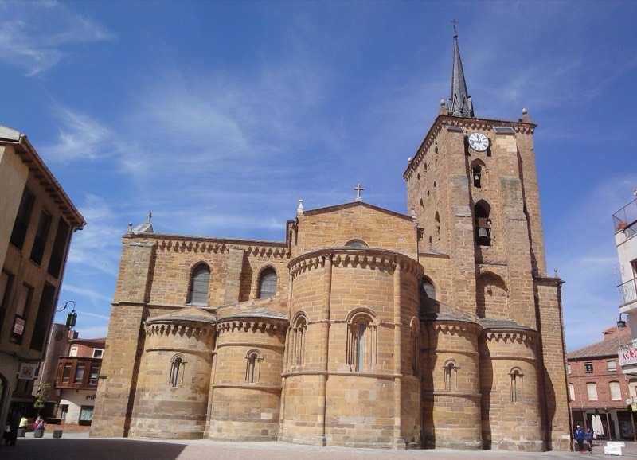
Пять апсид Санта-Мария-дель-Асоге и башня Torre del Caracol 1504 года с мудехарским потолком — всё в пяти минутах от развязки A-66/A-6.
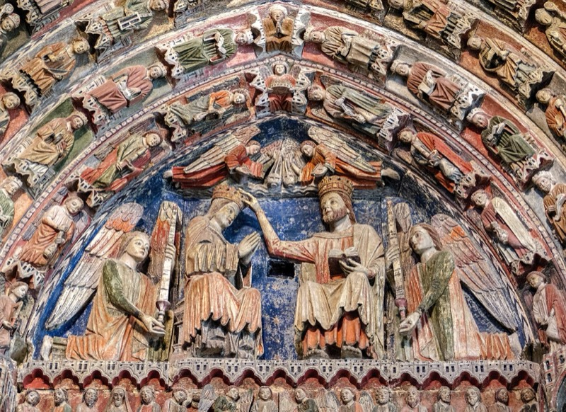
Portico de la Majestad: готический портал начала XIII века с уцелевшей средневековой полихромией — таких в Испании единицы. Плюс купол-близнец заморского и обрыв над виноградниками Дуэро.
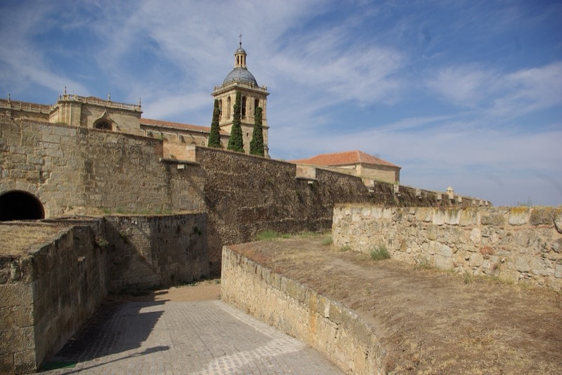
Бастионный пояс вокруг средневековых стен: Ней брал город 77 дней в 1810-м, Веллингтон отбил в 1812-м и получил за это герцогский титул. Выбоины от ядер видны до сих пор.
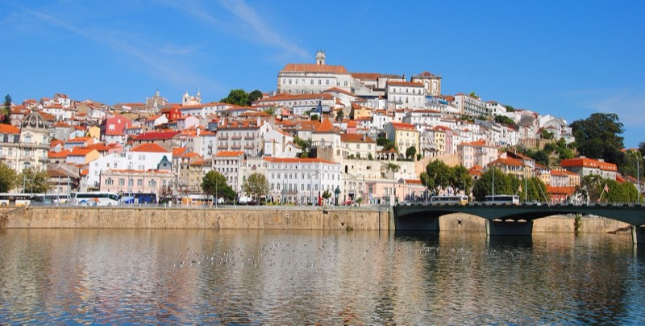
Единственный светлый стоп вторника. Столица королевства 1131–1255, университет с 1290-го, романский Sé Velha 1162 года почти без готических переделок. Библиотека Жуанина с колонией летучих мышей, которые по ночам едят древоточцев.
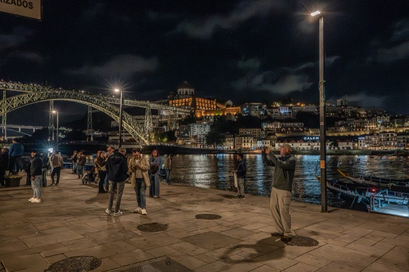
Останавливаться в самом Порту не надо: лучший вид на Рибейру и мост Дон-Луиш — с другого берега, из Жардим-ду-Морру и от круглого монастыря Серра-ду-Пилар, откуда Веллингтон в 1809-м готовил переправу.
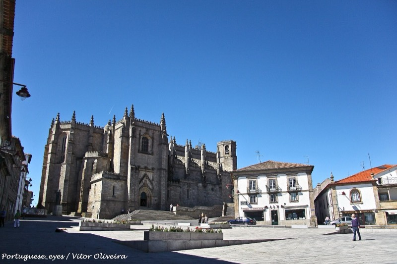
Самый высокий город Португалии, 1056 м. Собор строили полтора века с 1390-го: снаружи это крепость — глухой гранит, контрфорсы, зубцы. Внизу — старый еврейский квартал со знаками, вырезанными в косяках.
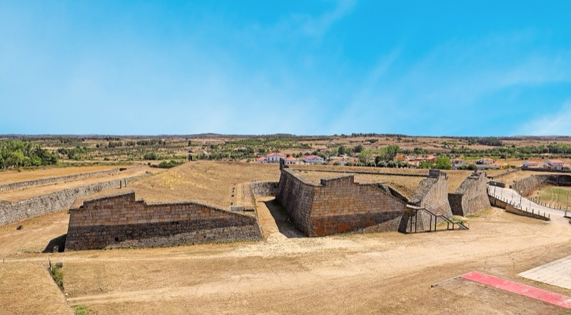
Прямой аналог Валенсы на обратном пути: шестибастионная звезда школы Вобана (проект Сен-Поля, не самого Вобана). В 1810-м французский снаряд поджёг пороховую дорожку, взрыв снёс замок и убил около 600 защитников за одну ночь.
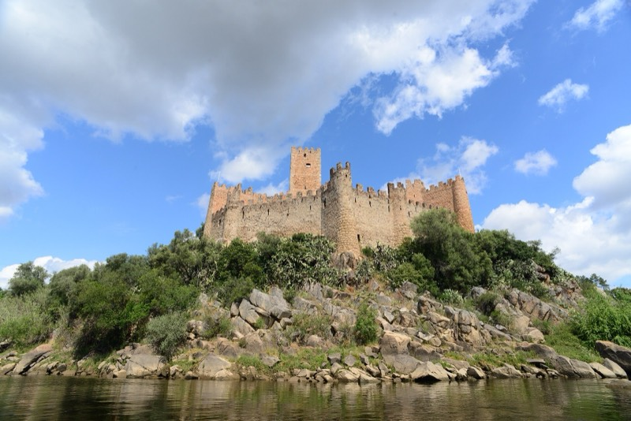
Тамплиерский замок 1171 года на острове посреди Тежу — бонус почти у дома. Ночью подсвечен с 1988 года, смотреть с южного берега в Шамушке.
На будущее, в темноте бессмысленны: Авейру с каналами (нужно быть на воде до 18:00), Монсанту — деревня среди валунов, где подсветки нет принципиально, ради тёмного неба, Сортелья и Томар с монастырём Христа, который запирают в 18:30. Томар с Алмоуролом просятся отдельным днём из Лиссабона — это всего 135 км.
Приехали в Овьедо раньше — меню на выбор. Логистика подсказывает связки: Нимейер лежит прямо на пятничной дороге (Авилес — между Кудильеро и Овьедо), Санта-Кристина — на субботней A-66 домой, а восточная тройка (Тито-Бустильо, Гульпиюри, Буфонес) сцепляется в одну вылазку — между ними по 20–30 минут. Дождливый вечер пятницы закрывает и Bellas Artes из основной программы: он открыт до 20:00 — суббота станет свободнее. Название карточки — ссылка в Maps.
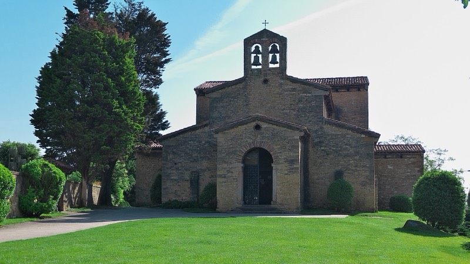
Крупнейшая церковь прероманики (~830 год, мастер Тиода) в 2 км от центра. Три яруса фресок IX века без единой человеческой фигуры: римская иллюзорная архитектура на стенах астурийской базилики.
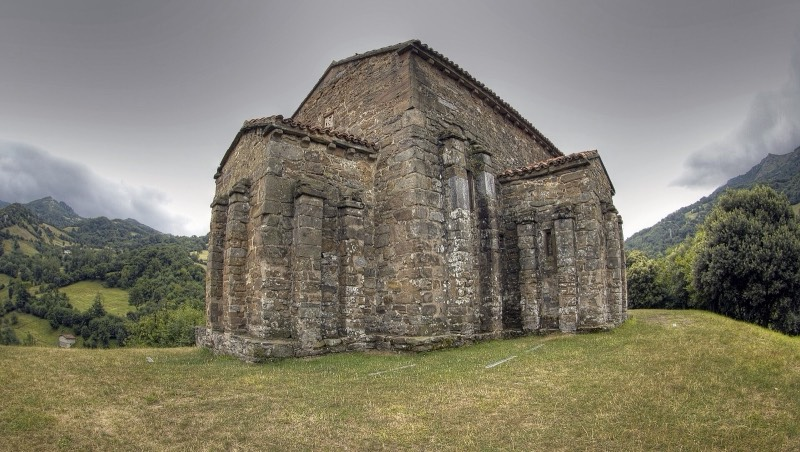
Та же «рамирская» мастерская, что строила Наранко, — а внутри единственный в Астурии каменный иконостас с вестготскими рельефами VII века. Одинокий холм над долиной, ЮНЕСКО с 1985-го.
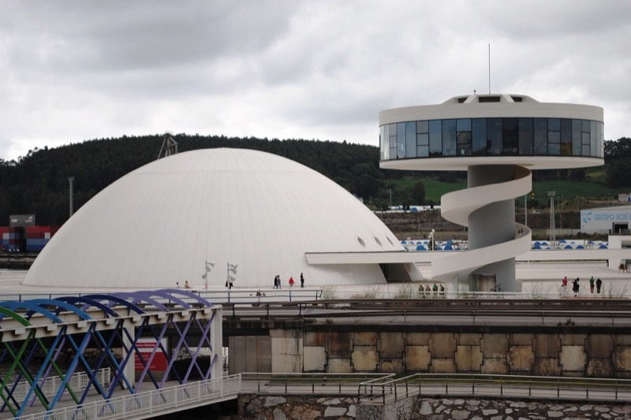
Единственный Нимейер в Испании (2011) — белый купол, красная «волна» аудиториума и башня над рией. В августе под куполом Буртинский «Agua», Фонткуберта и биеннале архитектуры. Старый Авилес с аркадами — в 10 минутах.
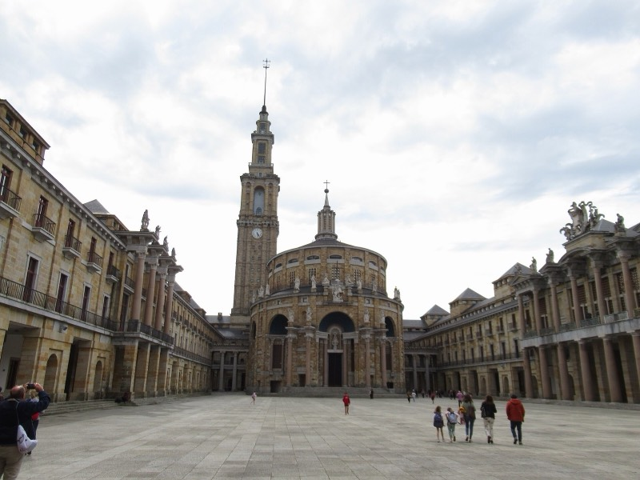
Самое большое здание Испании: 270 000 м², больше Эскориала (Луис Мойя, 1946–56). Рядом на холме над морем — «Elogio del Horizonte» Чильиды: встань внутрь бетонной «улитки» и услышишь усиленный гул океана.
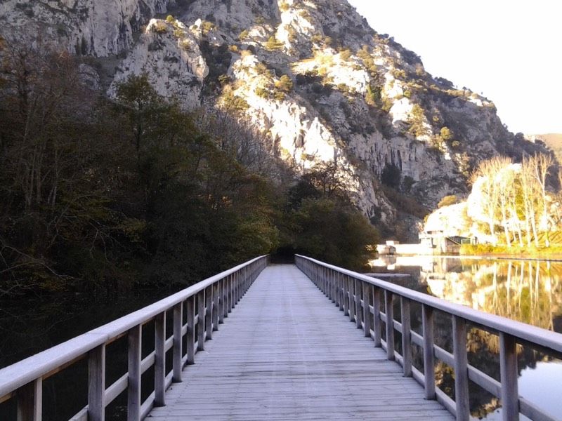
Узкоколейка XIX века, превращённая в тропу: теснина реки Трубия, туннели, подвесные мостики. В горном вольере у Проасы — медведица Молина, кормление около полудня. Лучший кусок — Туньон — Проаса, 11 км.
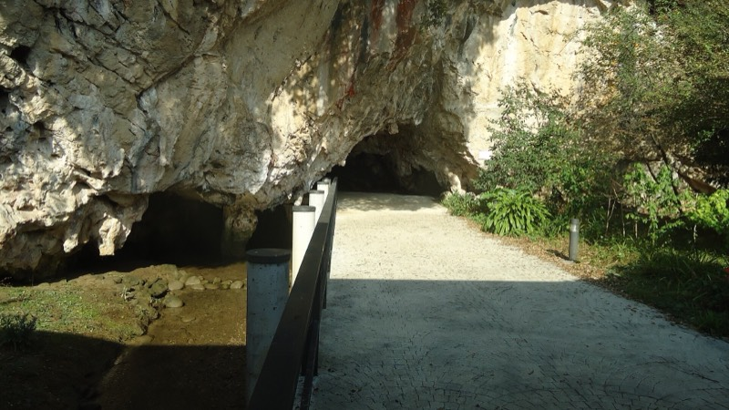
Настоящая палеолитическая живопись, не реплика: панель лошадей мадленской эпохи, ЮНЕСКО. 700 метров по живой пещере с рекой. Группы по 15 человек — билеты на субботу проверять немедленно.
{kind=link}
.jpg){kind=link}
{kind=link}
{kind=link}
{kind=link}
{kind=link}
{kind=link}
.jpg){kind=link}
{kind=link}
.jpg){kind=link}
{kind=link}
{kind=link}
{kind=link}
{kind=link}
{kind=link}
{kind=link}
{kind=link}
{kind=link}
{kind=link}
.jpg){kind=link}
{kind=link}
{kind=link}
{kind=link}
.jpg){kind=link}
{kind=link}
{kind=link}
{kind=link}
{kind=link}
{kind=link}
{kind=link}
{kind=link}
{kind=link}
{kind=link}
{kind=link}
{kind=link}
{kind=link}
{kind=link}
{kind=link}
{kind=link}
{kind=link}
{kind=link}
{kind=link}